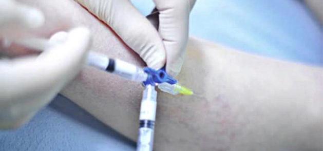
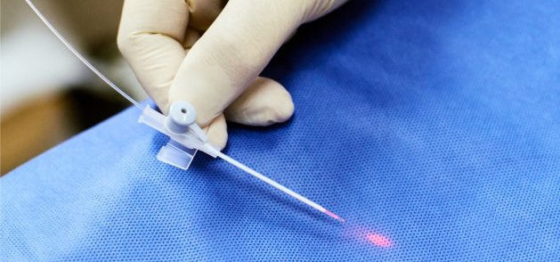

Какие существуют способы лечения варикоза?
Многие задаются вопросом, что делать, когда видят варикоз на руках. Для начала следует успокоиться и записаться
на прием к врачу в медицинский центр доктора Бегмы.
Склеротерапия
Эндовазальная лазерная облитерация (ЭВЛО).


Это 2 эффективных способа, которые помогут быстро устранить расширение вен.
Склеротерапия является надежным и малоинвазивным методом. В процессе проведения терапии в расширенныекапилляры
вводят химические вещества, снимающие воспаление в сосудах и заращивающие их просвет. После этого капилляры
сужаются и через некоторый период времени пропадают. ЭВЛО подразумевает операцию, которую проводят лазером.
После такой процедуры варикоз исчезает, вероятность рецидива снижается к минимуму. Лазер направляют на стенки
вен, при этом не оказывает ожог находящихся рядом структур.